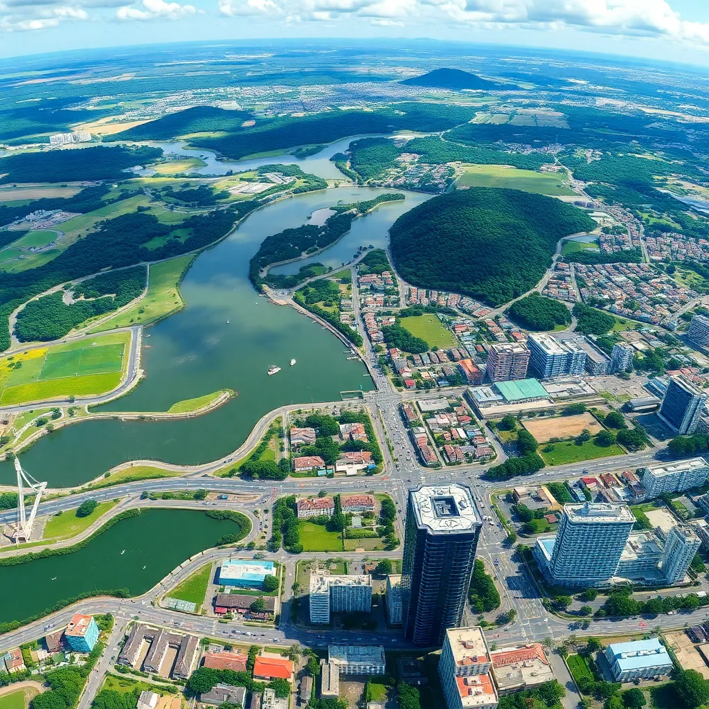

Conexão Campo Cidade
A conexão campo cidade é uma ponte fundamental entre o desenvolvimento rural e urbano, promovendo a integração social, econômica e ambiental. Esse conceito estimula a troca de culturas, tecnologias e oportunidades entre áreas diferenciadas, fortalecendo comunidades e garantindo sustentabilidade.
O Que É a Conexão Campo Cidade?
É um conjunto de estratégias que facilita o intercâmbio entre o meio rural e urbano, gerando impactos positivos em ambos os ambientes. Inclui:
- Integração econômica: produtos e serviços rurais chegando ao mercado urbano;
- Transporte e infraestrutura: melhoria das vias e comunicação;
- Socialização e cultura: troca intercultural e fortalecimento das identidades;
- Desenvolvimento sustentável: práticas que respeitam o meio ambiente e geram prosperidade.
Esta conexão é essencial para o equilíbrio regional, promovendo qualidade de vida e oportunidades.
g> ampliação das oportunidades em setores diversos.
Benefícios Fundamentais
Ao aproximar campo e cidade, diversos benefícios são alcançados, tais como:
- Fortalecimento econômico: comércio agropecuário mais eficiente e fortalecimento do turismo rural.
- Geração de empregos: ampliação das oportunidades em setores diversos.
- Valorização cultural: preservação e divulgação das tradições rurais e urbanas.
- Sustentabilidade ambiental: práticas integradas que evitam o esgotamento de recursos.
Exemplos Práticos
Projetos e iniciativas que representam bem a conexão campo cidade:
- Mercados locais: feiras que vendem produtos agrícolas diretamente aos consumidores urbanos.
- Turismo rural: hospedagens e experiências no campo para moradores da cidade.
- Cooperativas mistas: associações que unem produtores rurais e empreendedores urbanos para inovação e vendas.
- Transporte sustentável: investimentos em transporte que ligam áreas rurais às cidades com tecnologia limpa.